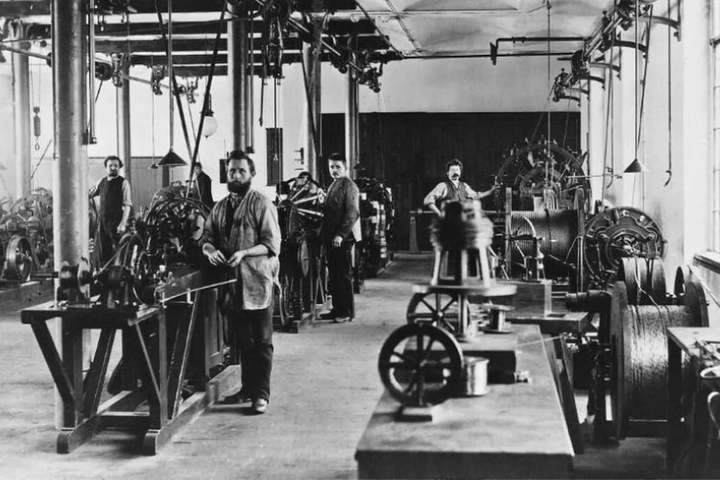
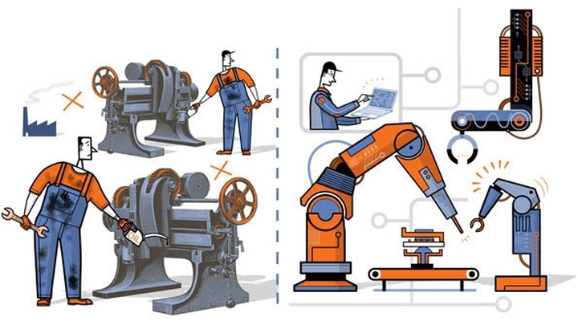

Cuộc cách mạng công nghiệp và di sản hiện đại
Cuộc Cách mạng Công nghiệp không chỉ là bước ngoặt trong lịch sử nhân loại, mà còn là khởi đầu của một kỷ nguyên hoàn toàn mới — nơi công nghệ, máy móc và con người cùng định hình lại xã hội.
Từ hơi nước cho đến trí tuệ nhân tạo, mỗi giai đoạn cách mạng công nghiệp đều để lại những dấu ấn sâu sắc, ảnh hưởng đến cách chúng ta sản xuất, sống và suy nghĩ. Bài viết này sẽ cùng nhìn lại hành trình đó, để thấy rõ hơn di sản mà các cuộc cách mạng công nghiệp đã để lại cho thế giới hiện đại.
1. Khi bánh xe lịch sử bắt đầu quay nhanh hơn
Lịch sử loài người từng trải qua hàng ngàn năm phát triển chậm rãi, khi nền nông nghiệp và lao động thủ công là trung tâm của mọi nền văn minh. Thế nhưng, chỉ trong vài trăm năm trở lại đây, tốc độ thay đổi của nhân loại đã tăng lên đến mức chưa từng có. Sự xuất hiện của máy móc, năng lượng hơi nước, và sau đó là điện, máy tính và trí tuệ nhân tạo – tất cả đã đẩy xã hội loài người vào những bước ngoặt không thể đảo ngược.
“Cách mạng công nghiệp” không chỉ là câu chuyện của máy móc hay kỹ thuật. Đó là câu chuyện về sự thay đổi tận gốc của con người – từ cách lao động, tư duy, đến tổ chức xã hội. Mỗi cuộc cách mạng công nghiệp đều để lại một di sản sâu sắc, trở thành nền tảng cho nền văn minh hiện đại. Hôm nay, khi chúng ta bước đi trong thế giới kỹ thuật số, hơi thở của những cuộc cách mạng ấy vẫn đang âm thầm định hình từng hành động, từng suy nghĩ của chúng ta.
2. Cách mạng công nghiệp lần thứ nhất – Khởi đầu từ hơi nước
Vào cuối thế kỷ 18, nước Anh trở thành cái nôi của cuộc cách mạng công nghiệp đầu tiên. Trước đó, sản xuất phụ thuộc hoàn toàn vào sức người và động vật. Nhưng sự ra đời của máy hơi nước do James Watt cải tiến đã thay đổi mọi thứ. Năng lượng không còn đến từ cơ bắp, mà đến từ áp suất và nhiệt – mở ra kỷ nguyên của sản xuất cơ giới hóa.
Ngành dệt, luyện kim, và giao thông bùng nổ. Những nhà máy đầu tiên mọc lên, kéo theo sự ra đời của giai cấp công nhân và các thành phố công nghiệp như Manchester hay Birmingham. Từ đó, “sức lao động” bắt đầu được định nghĩa lại – không còn là từng người thợ tỉ mẩn, mà là một phần trong cỗ máy sản xuất khổng lồ.
Di sản của thời kỳ này không chỉ là máy móc, mà còn là tư duy công nghiệp hóa: đo lường, năng suất và tối ưu. Nó đặt nền móng cho nền sản xuất hiện đại và mở ra thời kỳ mà con người tin rằng mình có thể chinh phục thiên nhiên bằng công nghệ.
3. Cách mạng công nghiệp lần thứ hai – Ánh sáng của điện và dây chuyền sản xuất
Khi con người đã học cách sử dụng năng lượng hơi nước, họ nhanh chóng tìm đến một nguồn sức mạnh mới: điện năng. Vào cuối thế kỷ 19, hàng loạt phát minh vĩ đại xuất hiện: bóng đèn của Thomas Edison, động cơ đốt trong, và đặc biệt là dây chuyền lắp ráp hàng loạt của Henry Ford – nền tảng cho sản xuất công nghiệp hiện đại.

Nếu cuộc cách mạng đầu tiên đưa con người vào nhà máy, thì cuộc cách mạng thứ hai đưa cả nhà máy ra toàn cầu. Giao thông, viễn thông, và thương mại quốc tế phát triển mạnh mẽ. Những chuyến tàu, chiếc xe hơi, hay dây điện kéo dài hàng trăm kilomet là biểu tượng của thời kỳ này – thời kỳ mà thế giới lần đầu tiên trở nên “kết nối”.
Di sản của cuộc cách mạng thứ hai không chỉ là vật chất, mà là mô hình tổ chức sản xuất và tiêu dùng hàng loạt – nền móng của xã hội công nghiệp và văn hóa đại chúng. Chính từ đây, thế giới bước vào kỷ nguyên hiện đại hóa toàn diện.
4. Cách mạng công nghiệp lần thứ ba – Khi con người kết nối bằng dữ liệu
Sau hai thế kỷ cơ giới hóa và điện khí hóa, loài người lại mở ra một chương mới – thời đại của điện tử và máy tính. Từ thập niên 1970, sự xuất hiện của bán dẫn, vi mạch, máy tính cá nhân và đặc biệt là Internet đã khiến thế giới thay đổi mãi mãi.
Giờ đây, thông tin có thể được truyền đi trong chớp mắt, tri thức trở thành nguồn lực chính, và “văn phòng” không còn là một không gian cố định. Cuộc cách mạng này không chỉ tạo ra hàng triệu việc làm mới, mà còn xóa nhòa khoảng cách giữa các châu lục.

Di sản của nó là nền kinh tế tri thức và xã hội thông tin mà chúng ta đang sống ngày nay – nơi con người không chỉ sản xuất bằng tay, mà bằng tư duy, ý tưởng và dữ liệu. Đây là giai đoạn mà tri thức trở thành “dầu mỏ mới” của thế giới.
5. Cách mạng công nghiệp lần thứ tư – Kỷ nguyên của trí tuệ nhân tạo
Bước sang thế kỷ 21, nhân loại đang trải qua cuộc cách mạng thứ tư – nơi ranh giới giữa con người và máy móc, vật lý và kỹ thuật số gần như bị xóa nhòa. AI, robot, dữ liệu lớn, Internet vạn vật (IoT) hay blockchain không còn là khái niệm viễn tưởng, mà là nền tảng vận hành của mọi lĩnh vực, từ tài chính, y học đến nghệ thuật.
Điểm khác biệt của cuộc cách mạng này nằm ở chỗ: công nghệ không chỉ phục vụ con người, mà bắt đầu học và thay thế con người. Máy móc có thể sáng tạo, ra quyết định, thậm chí cảm nhận – ít nhất là trong phạm vi dữ liệu mà chúng được huấn luyện.
Di sản đang hình thành là một nền kinh tế phi biên giới, nơi năng suất được tối ưu hóa đến mức tối đa, nhưng cũng tiềm ẩn vô vàn câu hỏi về đạo đức và giá trị con người. Con người có còn là trung tâm của nền sản xuất nữa hay không? Đó là câu hỏi mà kỷ nguyên AI buộc chúng ta phải đối diện.
6. Mặt trái của phát triển – Khi công nghiệp hóa đi quá xa
Cách mạng công nghiệp không chỉ mang lại tiến bộ, mà còn mở ra hàng loạt vấn đề xã hội và môi trường. Khi máy móc thay thế sức người, hàng triệu lao động thủ công bị mất việc. Sự tập trung sản xuất vào các nhà máy khổng lồ khiến điều kiện làm việc trở nên tồi tệ, với những ca làm kéo dài hàng chục giờ và mức lương rẻ mạt.
Bên cạnh đó, quá trình công nghiệp hóa nhanh chóng dẫn đến ô nhiễm môi trường, khai thác cạn kiệt tài nguyên và phát thải khí nhà kính, làm biến đổi khí hậu toàn cầu. Các thành phố công nghiệp phát triển chóng mặt nhưng thiếu quy hoạch, kéo theo ô nhiễm không khí, nước thải và rác thải độc hại.
Càng về sau, khi công nghiệp lan rộng ra toàn cầu, khoảng cách giàu – nghèo cũng ngày càng nới rộng. Một bộ phận nhỏ sở hữu công nghệ, vốn và tư liệu sản xuất, trong khi phần lớn người lao động chỉ trở thành “bánh răng” trong cỗ máy kinh tế khổng lồ.
Đó là mặt tối của tiến bộ, nhắc nhở nhân loại rằng: phát triển vật chất không thể tách rời trách nhiệm xã hội và môi trường.
7. Di sản xã hội và văn hóa – Khi thế giới thay đổi cách sống
Cách mạng công nghiệp không chỉ biến đổi sản xuất, mà còn làm thay đổi cấu trúc xã hội và giá trị văn hóa của con người. Trước kia, con người sống trong cộng đồng nhỏ, gắn bó với làng nghề, nông nghiệp và thiên nhiên. Nhưng khi đô thị hóa tăng mạnh, lối sống công nghiệp hình thành: nhanh hơn, tiện nghi hơn, nhưng cũng xa cách hơn.
Thay vì lao động tập thể trong nông thôn, con người di cư ồ ạt lên thành phố để làm việc trong nhà máy. Gia đình mở rộng dần bị thu hẹp, nhường chỗ cho mô hình gia đình hạt nhân.
Văn hóa đại chúng, báo chí, truyền hình, rồi Internet đã biến “thế giới” thành một ngôi làng toàn cầu, nơi con người chia sẻ cùng một nhịp sống, cùng một xu hướng tiêu dùng, nhưng cũng đánh mất phần nào bản sắc địa phương.
Tuy nhiên, chính từ sự thay đổi đó, nhân loại cũng học cách thích nghi và sáng tạo ra văn hóa mới – văn hóa công nghiệp, văn hóa tiêu dùng, và gần đây là văn hóa số. Đây chính là một di sản tinh thần song hành với mọi tiến bộ vật chất của thời đại.
8. Cách mạng công nghiệp ở Việt Nam – Từ thủ công đến số hóa
Việt Nam bước vào tiến trình công nghiệp hóa muộn hơn nhiều quốc gia phương Tây, nhưng lại tiếp cận cuộc cách mạng thứ tư trong bối cảnh hội nhập toàn cầu. Từ sau công cuộc Đổi Mới (1986), Việt Nam đã chuyển mình mạnh mẽ: từ nền kinh tế nông nghiệp truyền thống sang nền kinh tế công nghiệp và dịch vụ.
Những năm gần đây, Chính phủ Việt Nam định hướng phát triển kinh tế số, chuyển đổi số trong doanh nghiệp và hành chính công, khuyến khích ứng dụng AI, IoT và tự động hóa trong sản xuất. Các khu công nghiệp, trung tâm công nghệ cao, và doanh nghiệp khởi nghiệp sáng tạo mọc lên ngày càng nhiều.
Dù còn nhiều thách thức về nhân lực, hạ tầng và thể chế, Việt Nam vẫn đang khẳng định vị thế trong chuỗi giá trị toàn cầu – nơi công nghệ không chỉ là công cụ sản xuất, mà là chìa khóa phát triển bền vững. Con đường công nghiệp hóa của Việt Nam hôm nay chính là một phần của di sản mà thế giới để lại từ hơn 200 năm trước.
9. Từ máy móc đến con người – Tái định nghĩa giá trị nhân loại
Mỗi cuộc cách mạng công nghiệp đều buộc con người phải tự hỏi: “Mình là ai trong thế giới của máy móc?”.
Khi robot có thể thay thế sức lao động, và AI có thể sáng tạo như nghệ sĩ, vai trò của con người không còn nằm ở “làm nhanh hơn” hay “làm nhiều hơn”, mà ở tư duy, cảm xúc và đạo đức – những thứ máy móc chưa thể sao chép.
Đây là lý do mà giáo dục, sáng tạo và kỹ năng mềm đang trở thành giá trị trung tâm của thời đại.
Nếu thế kỷ 19 là kỷ nguyên của kỹ sư, thì thế kỷ 21 là kỷ nguyên của người học suốt đời.
Con người đang tiến từ “lao động cơ bắp” sang “lao động trí tuệ”, và đó mới chính là bước tiến sâu sắc nhất mà các cuộc cách mạng công nghiệp mang lại.
10. Kết luận – Di sản của những bánh răng không ngừng quay
Từ hơi nước đến AI, từ cỗ máy dệt vải đến robot tự động, loài người đã đi một chặng đường dài. Mỗi cuộc cách mạng công nghiệp là một dấu mốc của trí tuệ, sáng tạo – và cả sai lầm.
Nhưng vượt lên tất cả, nó cho thấy sức mạnh không giới hạn của con người trong việc kiến tạo tương lai.
Di sản mà chúng ta thừa hưởng hôm nay không chỉ là công nghệ, mà là bản lĩnh và tinh thần đổi mới – dám nghĩ, dám thử, dám thay đổi.
Và khi những bánh răng vẫn tiếp tục quay, cuộc cách mạng công nghiệp tiếp theo có thể không còn ở nhà máy, mà ở trong chính tâm trí của con người – nơi “công nghệ” và “nhân tính” phải cùng nhau tiến hóa để giữ cho thế giới cân bằng, nhân văn và bền vững.